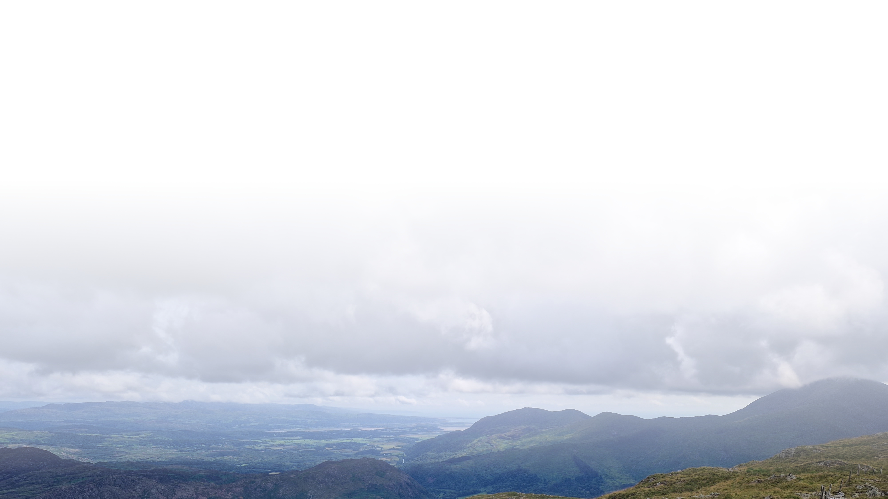
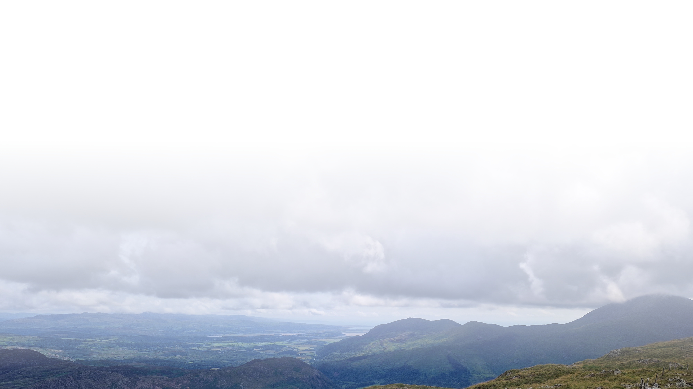
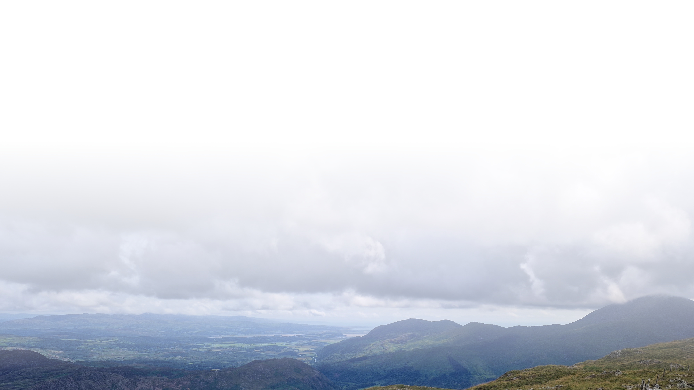
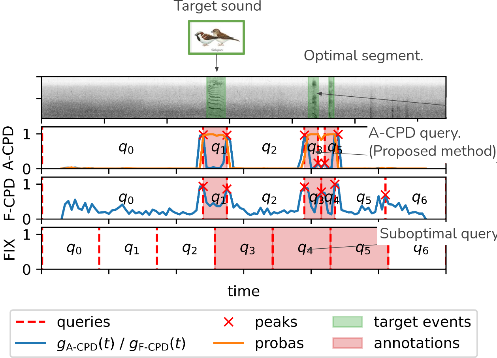
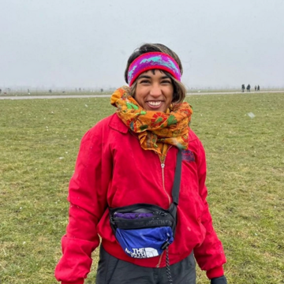
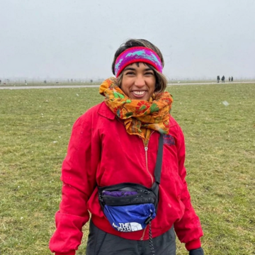

Loading.
PYMD slides requires a javascript-enabled browser.
Usage. Arrow buttons, page up/down, or space to navigate. F for fullscreen. B for blank. Click on leftmost quarter for previous slide, the rest for next.




 

RISE Learning machines seminars
Every thursday at 15:00